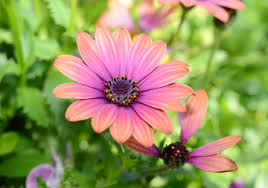
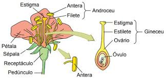
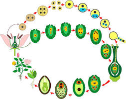

Angiospermas
As angiospermas são o grupo de plantas traqueófitas que possuem as sementes envoltas em um fruto, e têm flores. É o grupo mais abundante de plantas, correspondendo a cerca de 90% da flora de nosso planeta.
Estrutura
A flor
A flor é uma estrutura das angiospermas essencial no processo de reprodução. Ela se prende ao caule das plantas através do pedúnculo e apresenta o receptáculo na outra estremidade. Nele se encontram os vertículos florais: cálice, corola, androceu e gineceu.
As pétala e sépalas são estruturas acessórias da flor, e atuam na atração de animais polinizadores.
O estame, estrutura formada pelo filete e pela antera, é o local onde se encontra os microsporângios, que formarão os micrósporos. Os micrósporos produzem o gametófito masculino: o grão de pólen.
Diferente das gimnospermas, nas angiospermas a polinização é feita majoritariamente por animais. As flores possuem nectários, que produzem néctar, um líquido nutritivo aos animais que, ao se alimentarem dele, passam a atuar como agentes polinizadores.
No pistilo, toda estrutura abrigada pelo gineceu, é onde está o ovário e o estigma, local onde os grãos de pólen são depositados.
Reprodução
Após a polinização, o grão de pólen será depositado no estigma e transportado através do estilete. A oosfera será, então, fecundada por um gameta masculino formando o zigoto. Um segundo gameta masculino se une a dois núcleos do gametófito feminino, formando um núcleo 3n, que dará origem a um tecido nutritivo chamado endosperma. Esse fenômeno, chamado de dupla fecundação, só acontece nas angiospermas.
Após a fecundação, teremos o desenvolvimento do óvulo para semente, carregando o embrião, e a parede do ovário se transforma no fruto.
A proteção oferecida pelos frutos favoreceu a dispersão das sementes das angiospermas, se tornando as plantas mais abundantes do planeta.
